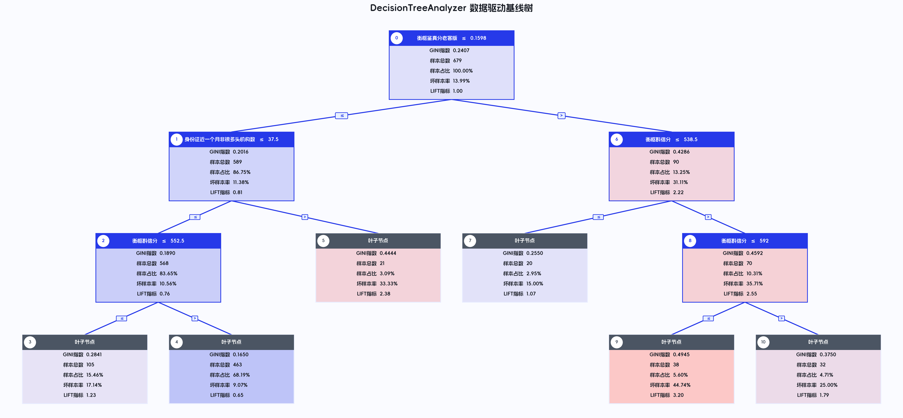
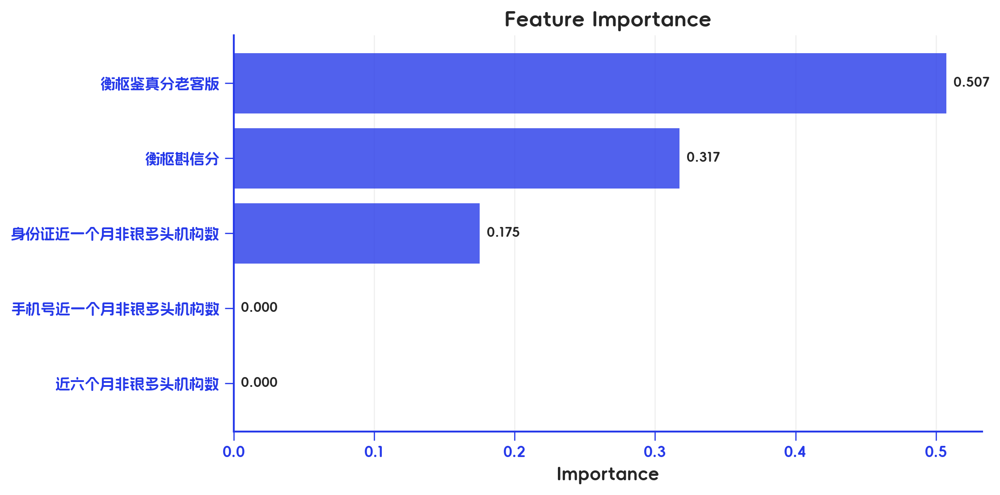
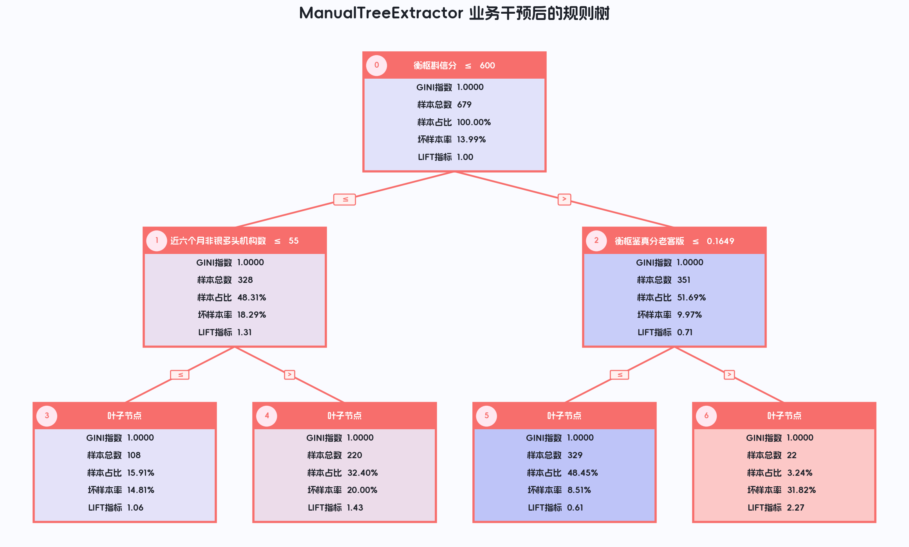
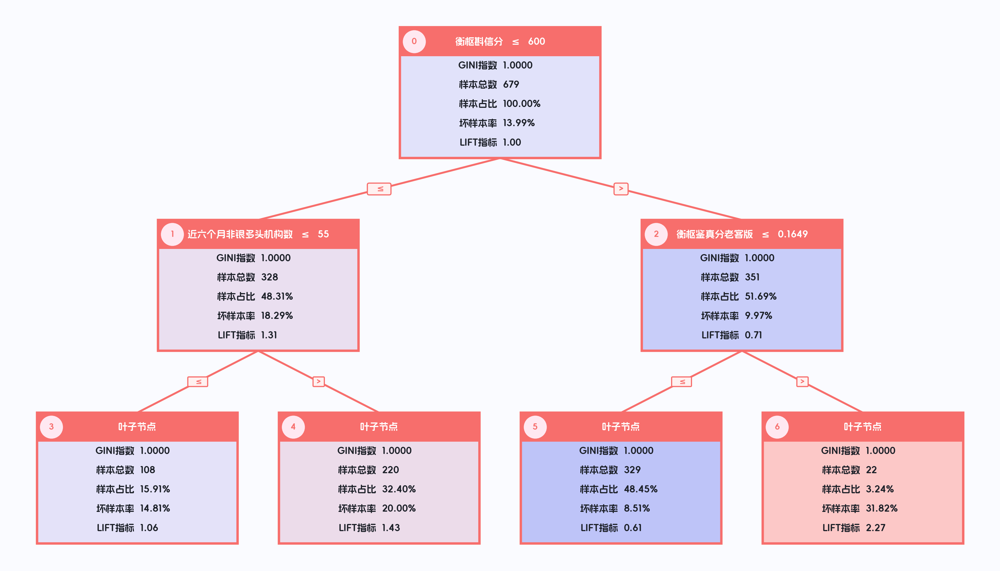
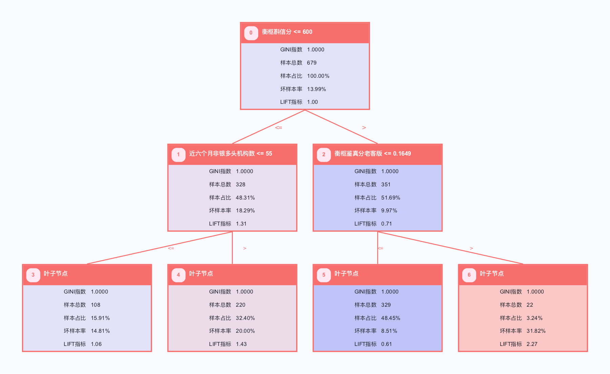
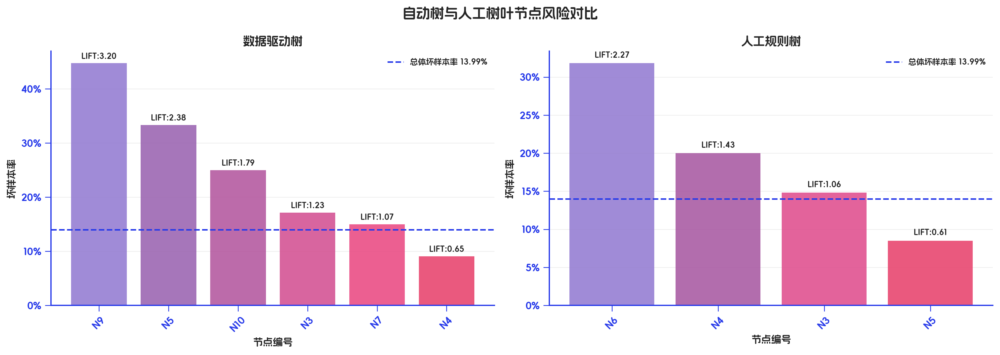

用 hscredit 建一套可解释、可干预、可评估的信贷决策树规则体系
做过信贷策略的人都有体会：风控里真正落地的，往往不是某个 AUC 更高的模型，而是一条条能被审批、运营、合规和管理层共同读懂的规则。规则是策略团队对外沟通的语言——它要能向业务解释“为什么拒这一批人”，要能在审批系统里稳定执行，要能在上线后被监控报表持续盯住。正因为如此，一条规则值不值得上线，从来不只是训练集上分裂增益高不高的问题，而是它背后那条逻辑是否站得住：换一批客户、换一个月份、换一种逾期口径、换到金额维度，它指向的风险方向还一不一致？
纯数据驱动的决策树很会“切数据”，但它切出来的规则常常让业务一头雾水——阈值是 592.0000 这样的长小数，分裂变量东一个西一个，叶子节点小到只有十几个样本。这些规则统计上漂亮，落到策略评审会上却很难通过：业务问“这条规则讲的是什么人”，你答不上来；运营问“这个阈值怎么监控”，报表里根本对不齐。决策树规则要真正支撑业务，缺的不是算法，而是把人的经验重新装回树里——让风控老兵几年攒下的判断（哪个评分该用多少分卡口、哪类多头客群风险更高、哪个阈值在系统里好部署）变成树结构的一部分，并且每改一刀都能立刻用真实样本回算效果。
hscredit 的决策树规则工具，正是围绕这条“人机协同”的主线展开，把策略开发拆成四层环环相扣的工作：
DecisionTreeAnalyzer：先让数据说话，训练一棵标准决策树，给出数据驱动的基准树、基准规则和基准评估，回答“数据自己会怎么切”。ManualTreeExtractor：再让经验介入，在指定节点人工分裂或剪枝，把专家判断注入树结构，回答“业务希望它怎么切”。Rule.report：把每条树路径还原成可执行规则，并按样本、金额、逾期等多种业务口径输出风控报告，回答“这条规则到底拦住了什么风险”。RuleSet与RulesClassifier：把验证过的规则组织成可预测、可解释、可追踪的规则集，回答“这套策略上线后怎么批量跑、怎么复核”。
这篇文章以一份真实放款样本 examples/hscredit_yyp.xlsx 为例，沿着“数据发现 → 经验干预 → 多口径验证 → 规则集落地”这条策略链路，完整走一遍自动挖掘、人工调树、规则评估、规则集分类和决策树画图的全过程。为了贴近业务表述，原始数据中的外部评分字段在读入时统一命名为 衡枢斟信分。
读者可以直接顺序运行本文 notebook。所有图表会保存到
examples/model_report/manual_tree_rule_mining/，运行输出可直接作为微信公众号或博客文章配图与表格素材。
下文中的表格均为阅读版结果表：长规则条件已换行，比例字段使用百分比展示，便于直接复制到公众号排版。
# 基础环境
import os
import sys
from pathlib import Path
import warnings
warnings.filterwarnings("ignore")
import numpy as np
import pandas as pd
import matplotlib.pyplot as plt
from IPython.display import display, HTML
from sklearn.model_selection import train_test_split
from sklearn.tree import DecisionTreeClassifier
# notebook 位于 examples/ 时，项目根目录在上一层；从项目根运行时则直接使用当前目录
CWD = Path.cwd()
ROOT = CWD if (CWD / "hscredit").exists() else CWD.parent
if str(ROOT) not in sys.path:
sys.path.insert(0, str(ROOT))
import hscredit
from hscredit.report.mining import DecisionTreeAnalyzer, ManualTreeExtractor, TreeRuleExtractor
from hscredit.core.rules import Rule
from hscredit.core.models import RuleSet, RulesClassifier
from hscredit.core.viz import (
plot_tree,
plot_tree_matplotlib,
plot_tree_pyecharts,
plot_tree_graphviz,
tree_leaf_comparison_plot,
feature_importance_plot,
)
from hscredit.utils.pandas_extensions import style_rule_table
pd.set_option("display.max_columns", None)
pd.set_option("display.width", 180)
plt.rcParams["font.sans-serif"] = ["Arial Unicode MS", "SimHei", "Microsoft YaHei", "DejaVu Sans"]
plt.rcParams["axes.unicode_minus"] = False
DATA_PATH = ROOT / "examples" / "hscredit_yyp.xlsx"
OUTPUT_DIR = ROOT / "examples" / "model_report" / "manual_tree_rule_mining"
OUTPUT_DIR.mkdir(parents=True, exist_ok=True)
DATA_PATH, OUTPUT_DIR
1. 数据准备：统一字段、保留业务口径
本文使用五个建树变量：
字段 |
使用含义 |
|---|---|
|
外部评分，分值型变量，后续使用 600 作为业务阈值示例 |
|
风险概率/风险分型变量，取值为 0.x，不适合使用 600 阈值 |
|
中期多头借贷强度 |
|
身份证维度近期查询/多头压力 |
|
手机号维度近期查询/多头压力 |
目标变量为 FPD。另外保留 MOB1、放款金额、放款时间 和 商品类别，用于多逾期口径、金额口径、时间外样本和先验客群评估。
df = pd.read_excel(DATA_PATH)
if "衡枢斟信分" not in df.columns:
score_24_cols = [col for col in df.columns if str(col).endswith("24")]
if len(score_24_cols) != 1:
raise ValueError(f"无法唯一识别待重命名的 24 分字段: {score_24_cols}")
df = df.rename(columns={score_24_cols[0]: "衡枢斟信分"})
target = "FPD"
feature_list = [
"衡枢斟信分",
"近六个月非银多头机构数",
"衡枢鉴真分老客版",
"身份证近一个月非银多头机构数",
"手机号近一个月非银多头机构数",
]
keep_cols = feature_list + [target, "MOB1", "放款金额", "放款时间", "商品类别"]
data = df[keep_cols].dropna(subset=[target]).copy()
data["放款月份"] = pd.to_datetime(data["放款时间"]).dt.to_period("M").astype(str)
# 建树变量保持数值型；业务字段保留原貌
for col in feature_list + [target, "MOB1", "放款金额"]:
data[col] = pd.to_numeric(data[col], errors="coerce")
df_train, df_test = train_test_split(
data,
test_size=0.30,
random_state=42,
stratify=data[target],
)
summary = pd.DataFrame({
"样本集": ["全量", "训练集", "测试集"],
"样本数": [len(data), len(df_train), len(df_test)],
"坏样本数": [int(data[target].sum()), int(df_train[target].sum()), int(df_test[target].sum())],
"坏样本率": [data[target].mean(), df_train[target].mean(), df_test[target].mean()],
})
summary
运行结果：样本概览
样本集 |
样本数 |
坏样本数 |
坏样本率 |
|---|---|---|---|
全量 |
970 |
136 |
14.02% |
训练集 |
679 |
95 |
13.99% |
测试集 |
291 |
41 |
14.09% |
# 建树变量诊断：summary(y=target) 同时给出分布、IV、KS、趋势等风控口径
feature_profile = data[feature_list + [target]].summary(
y=target,
percentiles=[0.1, 0.25, 0.5, 0.75, 0.9],
)
feature_profile[
["特征名", "字段类型", "样本数", "缺失率", "IV", "KS", "趋势", "最小值", "10%", "25%", "50%", "75%", "90%", "最大值"]
]
运行结果：建树变量量纲检查
特征名 |
字段类型 |
样本数 |
缺失率 |
IV |
KS |
趋势 |
最小值 |
10% |
25% |
50% |
75% |
90% |
最大值 |
|---|---|---|---|---|---|---|---|---|---|---|---|---|---|
衡枢斟信分 |
numerical |
970 |
0.00% |
0.0546 |
0.1399 |
peak |
372.00 |
525.90 |
561.25 |
603.00 |
647.00 |
684.10 |
850.00 |
近六个月非银多头机构数 |
numerical |
970 |
0.00% |
0.0649 |
0.1153 |
valley |
19.00 |
45.90 |
52.00 |
61.00 |
69.00 |
76.00 |
94.00 |
衡枢鉴真分老客版 |
id |
970 |
0.00% |
0.1860 |
0.1840 |
valley |
0.0095 |
0.0370 |
0.0541 |
0.0838 |
0.1239 |
0.1679 |
0.3076 |
身份证近一个月非银多头机构数 |
numerical |
970 |
0.00% |
0.0665 |
0.0817 |
ascending |
3.0000 |
13.00 |
17.00 |
23.00 |
29.00 |
34.00 |
48.00 |
手机号近一个月非银多头机构数 |
numerical |
970 |
0.00% |
0.0267 |
0.0802 |
valley |
1.0000 |
11.00 |
16.00 |
22.00 |
28.00 |
33.00 |
49.00 |
这一步看似只是“检查数据”，实际上是后面所有人工干预的地基。从变量量纲看，衡枢斟信分 是几百分量级的分值型变量，所以拿 600 分当卡口，业务一听就懂、系统一配就能跑；而 衡枢鉴真分老客版 是 0.x 的风险概率型变量，硬套 600 分毫无意义，得用 0.15、0.16 这类概率阈值。先把每个变量“是什么、该用什么量级的阈值”想清楚，再去设计手工分裂点——这一步在规则开发里最容易被略过，却往往是“规则上线后业务能不能理解、能不能监控”的分水岭。把变量诊断放在动手切树之前，本质上是先替业务把“这条规则将来怎么解释”想好。
2. 数据驱动基线：先让数据说话
任何一次规则开发，都该先听听数据自己的意见。DecisionTreeAnalyzer 就是用来建这第一棵“数据驱动基线树”的——它底层是 sklearn 决策树，但围绕信贷规则分析补齐了一整套策略团队真正用得上的能力：
evaluate()：输出 AUC、KS、LIFT、TOP 等指标，先看这棵树有没有基本的区分力。get_rule_table()：把每个节点路径翻译成规则，并附上命中样本、坏账率等业务指标。report()：在训练集、测试集或多份样本上按同一口径评估节点，看规则稳不稳。get_rules()：把叶子节点导出成可独立评估的Rule对象。plot()/plot_tree()：画出能拿去开会的可解释树图。
这一阶段的目的不是直接上线，而是摸清数据的底牌：哪些变量组合在一起最能区分好坏、风险往哪个方向走、大致在什么位置切一刀比较有效。它给后面的人工干预提供一张“数据视角”的参照地图——经验要在数据证据之上做加法，而不是凭空拍脑袋。
analyzer = DecisionTreeAnalyzer(
target=target,
features=feature_list,
tree_params={
"max_depth": 3,
"min_samples_split": 50,
"min_samples_leaf": 20,
"random_state": 42,
},
)
analyzer.fit(df_train)
pd.DataFrame(
analyzer.evaluate([("测试集", df_test)], metric_type="ks"),
columns=["样本集", "KS"],
)
运行结果：基线树 KS
样本集 |
KS |
|---|---|
训练集 |
0.2868 |
测试集 |
0.1567 |
auto_leaf = analyzer.get_rule_table(leaf_only=True)
auto_leaf_view = auto_leaf[
["节点编号", "是否叶子", "指标含义", "样本总数", "样本占比", "坏样本率", "LIFT值", "风险拒绝比"]
].sort_values("LIFT值", ascending=False)
auto_leaf_view
运行结果：数据驱动基线树叶节点
节点编号 |
是否叶子 |
指标含义 |
样本总数 |
样本占比 |
坏样本率 |
LIFT值 |
风险拒绝比 |
|---|---|---|---|---|---|---|---|
9 |
是 |
衡枢斟信分 <= 592.0000(含缺失) |
38 |
5.60% |
44.74% |
3.1975 |
2.3278 |
5 |
是 |
衡枢鉴真分老客版 <= 0.1598(含缺失) |
21 |
3.09% |
33.33% |
2.3825 |
1.4266 |
10 |
是 |
衡枢斟信分 > 592.0000 |
32 |
4.71% |
25.00% |
1.7868 |
0.8258 |
3 |
是 |
衡枢斟信分 <= 552.5000 |
105 |
15.46% |
17.14% |
1.2253 |
0.2665 |
7 |
是 |
衡枢斟信分 <= 538.5000 |
20 |
2.95% |
15.00% |
1.0721 |
0.0743 |
4 |
是 |
衡枢斟信分 > 552.5000(含缺失) |
463 |
68.19% |
9.07% |
0.6484 |
-1.1054 |
基线树的价值，在于它给出了一组“数据自己切出来的客群”，让我们对风险的分布心里有数。但读这张表不能只盯着 LIFT 最高那一行——策略落地要同时权衡“风险有多浓”和“覆盖有多大”。像节点 9 坏样本率 44.74%、LIFT 高达 3.20，听起来很诱人，可它只命中 38 个样本（占比 5.60%），这种高浓度小样本节点更适合当作“强信号复核名单”，用来人工核查或加验，而不宜直接拿去强拒；反过来，覆盖面更大的中高风险节点，才是真正能压降大盘坏账、值得纳入主力策略组合的对象。这种“既看浓度又看覆盖”的取舍，正是规则从“统计结果”走向“业务决策”的第一道关。
# predict_proba 与 apply 可用于样本级打标：概率用于排序，叶子节点用于解释分群
analyzer_scoring = df_test[[target] + feature_list].copy()
analyzer_scoring["树模型坏样本概率"] = analyzer.predict_proba(df_test)[:, 1]
analyzer_scoring["叶子节点"] = analyzer.apply(df_test)
analyzer_scoring.head(10)
运行结果：测试集样本级打标预览
FPD |
衡枢斟信分 |
近六个月非银多头机构数 |
衡枢鉴真分老客版 |
身份证近一个月非银多头机构数 |
手机号近一个月非银多头机构数 |
树模型坏样本概率 |
叶子节点 |
|---|---|---|---|---|---|---|---|
0 |
541 |
60 |
0.1238 |
12 |
13 |
0.1714 |
3 |
0 |
592 |
69 |
0.0674 |
17 |
18 |
0.0907 |
4 |
0 |
508 |
83 |
0.1387 |
26 |
26 |
0.1714 |
3 |
1 |
545 |
83 |
0.0860 |
24 |
25 |
0.1714 |
3 |
0 |
694 |
63 |
0.1331 |
12 |
12 |
0.0907 |
4 |
0 |
626 |
68 |
0.0270 |
28 |
28 |
0.0907 |
4 |
0 |
649 |
49 |
0.0181 |
27 |
27 |
0.0907 |
4 |
0 |
550 |
53 |
0.0671 |
33 |
32 |
0.1714 |
3 |
0 |
630 |
62 |
0.0801 |
12 |
12 |
0.0907 |
4 |
0 |
569 |
47 |
0.1749 |
15 |
15 |
0.4474 |
9 |
fig = plot_tree(
analyzer,
backend="matplotlib",
save=str(OUTPUT_DIR / "01_decision_tree_analyzer.png"),
title="DecisionTreeAnalyzer 数据驱动基线树",
)
plt.show()
图 1：数据驱动基线树

fig = feature_importance_plot(
features=feature_list,
importance=analyzer.clf.feature_importances_,
top_n=len(feature_list),
figsize=(9, 4.8),
save=str(OUTPUT_DIR / "02_decision_tree_feature_importance.png"),
)
plt.show()
图 2：决策树特征重要性

3. 批量候选规则：把候选池先铺开
一棵树能给的视角终究有限。TreeRuleExtractor 更像一台“候选规则生产线”——它能从单棵树、随机森林、GBDT 等多种树模型里批量抽取路径规则，再用 Rule.report 给每一条都回填命中样本数、坏样本率、LIFT 和坏账改善。换句话说，它帮策略团队把“可能有用的规则”先尽量铺开，避免一上来就被单一模型的视角框死。
但要强调的是：这一步产出的是候选，不是结论。候选池越大，越需要后面的人工经验和多口径验证来做减法。一条规则最终能不能进策略，靠的不是它在候选表里排第几，而是它讲的故事业务认不认、换个样本还稳不稳。
extractor_results = []
for algorithm in ["dt", "rf", "gbdt"]:
extractor = TreeRuleExtractor(
algorithm=algorithm,
target=target,
max_depth=3,
min_samples_split=50,
min_samples_leaf=20,
n_estimators=5,
random_state=42,
)
extractor.fit(df_train[feature_list + [target]])
extractor.extract_rules()
table = extractor.get_rules_dataframe(
top_n=8,
datasets=df_test[feature_list + [target]],
target=target,
min_samples=15,
)
if len(table):
table.insert(0, "算法", algorithm)
extractor_results.append(table)
candidate_rules = pd.concat(extractor_results, ignore_index=True)
candidate_rules.sort_values(["命中LIFT值", "命中样本数"], ascending=[False, False]).head(12)
运行结果：TreeRuleExtractor 候选规则 Top 12
算法 |
规则编号 |
规则表达式 |
命中样本数 |
命中样本占比 |
命中坏样本率 |
命中LIFT值 |
坏账改善 |
风险拒绝比 |
|---|---|---|---|---|---|---|---|---|
dt |
4 |
(衡枢鉴真分老客版 > 0.1584794893860817) |
16 |
5.50% |
37.50% |
2.6616 |
0.0967 |
1.7583 |
gbdt |
1 |
(手机号近一个月非银多头机构数 <= 37.5) |
22 |
7.56% |
31.82% |
2.2583 |
0.1029 |
1.3612 |
rf |
3 |
(衡枢鉴真分老客版 > 0.1584794893860817) |
30 |
10.31% |
30.00% |
2.1293 |
0.1298 |
1.2591 |
gbdt |
2 |
(手机号近一个月非银多头机构数 <= 37.5) |
19 |
6.53% |
26.32% |
1.8678 |
0.0606 |
0.9284 |
rf |
3 |
(近六个月非银多头机构数 > 74.5) |
46 |
15.81% |
21.74% |
1.5429 |
0.1019 |
0.6449 |
dt |
3 |
(衡枢鉴真分老客版 > 0.1584794893860817) |
14 |
4.81% |
21.43% |
1.5209 |
0.0263 |
0.5472 |
dt |
2 |
(衡枢鉴真分老客版 <= 0.1584794893860817) |
16 |
5.50% |
18.75% |
1.3308 |
0.0192 |
0.3500 |
rf |
4 |
(近六个月非银多头机构数 > 78.5) |
28 |
9.62% |
17.86% |
1.2674 |
0.0285 |
0.2959 |
gbdt |
1 |
(身份证近一个月非银多头机构数 <= 37.5) |
127 |
43.64% |
15.75% |
1.1177 |
0.0912 |
0.2089 |
rf |
1 |
(近六个月非银多头机构数 <= 78.5) |
152 |
52.23% |
14.47% |
1.0273 |
0.0298 |
0.0571 |
rf |
2 |
(近六个月非银多头机构数 <= 74.5) |
204 |
70.10% |
14.22% |
1.0090 |
0.0210 |
0.0300 |
gbdt |
3 |
(身份证近一个月非银多头机构数 <= 37.5) |
101 |
34.71% |
13.86% |
0.9838 |
-0.0086 |
-0.0248 |
读这张候选表，重点是从中看出风险的方向感，而不是把表达式原样抄进策略系统。表里能清楚看到两类规则：一类像 dt 算法那条 衡枢鉴真分老客版 > 0.16 且 衡枢斟信分 > 570，测试集 LIFT 高达 2.66，但只命中 16 人——风险很浓，适合进“强规则”候选，做复核或加验；另一类像 rf 那条单条件 近六个月非银多头机构数 > 74.5，覆盖 46 人但 LIFT 只有 1.54，更适合当作分层策略或组合策略里的一块拼图。把每条候选按“浓度高/覆盖广”归类，本质上就是在替后面的策略组合提前排兵布阵。
4. 人工决策树：把经验装回树里
这是整套方法的核心，也是“人机协同”真正发生的地方。
自动树解决的是“数据怎么切”，人工树解决的是“切出来的规则，业务认不认、敢不敢上”。这两者之间的鸿沟，是很多数据团队都踩过的坑：模型指标很漂亮，可一到策略评审会就被业务一句“这条规则讲不清楚”打回。规则要支撑业务，光有数据证据不够，还得有人替它注入可解释性、可部署性和行业常识——而注入的人，往往是那些对客群、对产品、对历史坏账了如指掌的风控老兵。
过去，业务专家的经验大多停留在会议室里：“我觉得这个分应该卡 600”“多头太多的客户得单独看”。这些判断很值钱，却常常只是一句口头建议，既没法立刻验证，也很难沉淀进可执行的策略。ManualTreeExtractor 改变的正是这一点——它让专家不再是在 PPT 上改阈值，而是直接在一棵可执行的树上动手：在哪个节点切、用哪个变量切、卡在哪个阈值，全凭经验决定；而每切一刀，规则表、树图和 Rule 对象都会基于最新结构当场重算，样本数、坏账率、LIFT、风险拒绝比、规则表达式即时刷新。经验和数据，第一次能在同一个对象上实时对话。
下面就演示这个过程：先从一棵数据自动生成的浅树起步，再把根节点换成业务最认可的那把卡尺——衡枢斟信分 <= 600。
manual_tree = ManualTreeExtractor(
target=target,
max_depth=2,
min_samples_split=50,
min_samples_leaf=20,
random_state=42,
)
manual_tree.fit(df_train, features=feature_list)
manual_base_leaf = manual_tree.get_rule_table(leaf_only=True)
manual_base_leaf[
["节点编号", "指标含义", "样本总数", "样本占比", "坏样本率", "LIFT值", "风险拒绝比"]
].sort_values("LIFT值", ascending=False)
运行结果：人工干预前的基础树叶节点
节点编号 |
指标含义 |
样本总数 |
样本占比 |
坏样本率 |
LIFT值 |
风险拒绝比 |
|---|---|---|---|---|---|---|
6 |
衡枢斟信分 > 538.5000(含缺失) |
70 |
10.31% |
35.71% |
2.5526 |
1.7311 |
3 |
衡枢鉴真分老客版 <= 0.1598(含缺失) |
21 |
3.09% |
33.33% |
2.3825 |
1.4266 |
5 |
衡枢斟信分 <= 538.5000 |
20 |
2.95% |
15.00% |
1.0721 |
0.0743 |
2 |
衡枢鉴真分老客版 <= 0.1598(含缺失) |
568 |
83.65% |
10.56% |
0.7550 |
-1.4987 |
manual_tree.manual_split(
data=df_train,
feature="衡枢斟信分",
threshold=600,
node=0,
)
manual_root_leaf = manual_tree.get_rule_table(leaf_only=True)
manual_root_leaf[["节点编号", "指标含义", "样本总数", "样本占比", "坏样本率", "LIFT值", "风险拒绝比"]]
运行结果：根节点改为 600 分后的两层客群
节点编号 |
指标含义 |
样本总数 |
样本占比 |
坏样本率 |
LIFT值 |
风险拒绝比 |
|---|---|---|---|---|---|---|
1 |
衡枢斟信分 <= 600.0000 |
328 |
48.31% |
18.29% |
1.3074 |
0.5947 |
2 |
衡枢斟信分 > 600.0000(含缺失) |
351 |
51.69% |
9.97% |
0.7127 |
-0.5947 |
把根节点换成 600 分，整棵树立刻被重构成两个一句话就能说清的客群：600 分及以下的“需要重点看的人”，和 600 分以上的“相对放心的人”。从纯统计看，600 未必是信息增益最大的切点；但从业务看，它赢在三个地方——评审会上一讲就懂、审批系统里好配置、上线后监控报表对得齐。这正是经验干预的典型回报：用一点点统计最优性，换回大量的可沟通、可部署、可监控。
更重要的是，重构之后两个客群可以各走各的逻辑：低分客群里我们继续盯“多头借贷强度”，高分客群里则让算法去找最合适的风险分阈值。同一棵树里，不同人群用不同变量、不同卡口——这恰恰是信贷策略“先分层、再施策”的日常打法，现在被原原本本地刻进了树结构里。
# 在低分客群中继续看中期多头；在高分客群中让算法为风险分自动寻找阈值
manual_tree.manual_split(
data=df_train,
feature="近六个月非银多头机构数",
threshold=55,
node=1,
)
manual_tree.manual_split(
data=df_train,
feature="衡枢鉴真分老客版",
threshold=None,
node=2,
)
manual_train_leaf = manual_tree.get_rule_table(df_train, leaf_only=True)
manual_test_leaf = manual_tree.get_rule_table(df_test, leaf_only=True)
manual_train_leaf[
["节点编号", "指标含义", "样本总数", "样本占比", "坏样本率", "LIFT值", "风险拒绝比"]
].sort_values("节点编号")
运行结果：人工树训练集叶节点
节点编号 |
指标含义 |
样本总数 |
样本占比 |
坏样本率 |
LIFT值 |
风险拒绝比 |
|---|---|---|---|---|---|---|
3 |
衡枢斟信分 <= 600.0000 |
108 |
15.91% |
14.81% |
1.0589 |
0.0700 |
4 |
衡枢斟信分 <= 600.0000 |
220 |
32.40% |
20.00% |
1.4295 |
0.6353 |
5 |
衡枢斟信分 > 600.0000(含缺失) |
329 |
48.45% |
8.51% |
0.6083 |
-0.7599 |
6 |
衡枢斟信分 > 600.0000(含缺失) |
22 |
3.24% |
31.82% |
2.2742 |
1.3168 |
manual_test_leaf[
["节点编号", "指标含义", "样本总数", "样本占比", "坏样本率", "LIFT值", "风险拒绝比"]
].sort_values("节点编号")
运行结果：人工树测试集叶节点
节点编号 |
指标含义 |
样本总数 |
样本占比 |
坏样本率 |
LIFT值 |
风险拒绝比 |
|---|---|---|---|---|---|---|
3 |
衡枢斟信分 <= 600.0000 |
44 |
15.12% |
15.91% |
1.1292 |
0.1522 |
4 |
衡枢斟信分 <= 600.0000 |
100 |
34.36% |
13.00% |
0.9227 |
-0.1178 |
5 |
衡枢斟信分 > 600.0000(含缺失) |
136 |
46.74% |
13.24% |
0.9394 |
-0.1138 |
6 |
衡枢斟信分 > 600.0000(含缺失) |
11 |
3.78% |
27.27% |
1.9357 |
0.9725 |
训练集和测试集对照看，是规则开发里最不能省的一步，也是经验干预之后必须接受的“数据检验”。专家可以凭判断切出一刀，但这一刀稳不稳，得让没参与训练的样本来投票。判断标准很朴素：一个节点要在训练集 LIFT 高、测试集也站得住，风险方向一致，才值得继续讨论；若训练集很强、一到测试集就失效，多半是赶上了样本的偶然性，或者切得太细。
这张对照表就给出了一正一反两个例子：节点 4 训练集 LIFT 有 1.43，测试集却滑到 0.92——风险方向都翻了，这种规则若硬上线，很可能上线即衰减，应当果断放弃；节点 6 训练集 LIFT 2.27、测试集仍有 1.94，虽然覆盖面小，但风险方向稳如磐石，最适合收进“强风险复核名单”。可见经验干预不是“专家说了算”，而是“专家提出假设、数据负责裁决”——这套一进一出的机制，才是规则能扛住上线考验的底气。
fig = plot_tree_matplotlib(
manual_tree,
figsize=(18, 12),
dpi=160,
save=str(OUTPUT_DIR / "03_manual_tree_business_split.png"),
title="ManualTreeExtractor 业务干预后的规则树",
)
plt.show()
图 3：业务干预后的人工规则树

5. 把规则树画给业务看
规则树最终是要给人看的——给评审会看、给审批材料看、给监管归档看。看的人不同，需要的图也不同。hscredit.core.viz.plot_tree 一个入口支持三种输出，正好对应三种汇报场景：
后端 |
适用场景 |
|---|---|
|
notebook 里快速预览、公众号文章的静态配图 |
|
可缩放的交互式 HTML，最适合策略评审会上现场展开细看 |
|
PDF/SVG/PNG 高清矢量，用于正式报告和合规归档 |
同一棵树，换个后端就能换种呈现，不用重画。更贴心的是：被人工动过的节点会用一种副主题色单独标出，让所有人一眼就能区分“哪几刀是数据自动切的、哪几刀是业务亲手改的”——经验在树里留下的痕迹，清清楚楚，可追溯、可问责。
# 统一入口：同一棵树可切换不同渲染后端
plot_tree(manual_tree, backend="matplotlib", save=str(OUTPUT_DIR / "04_plot_tree_unified.png"))
chart = plot_tree_pyecharts(
manual_tree,
title="交互式人工决策树规则图",
save=str(OUTPUT_DIR / "05_manual_tree_interactive.html"),
width="1400px",
height="900px",
)
src = plot_tree_graphviz(
manual_tree,
save=str(OUTPUT_DIR / "06_manual_tree_graphviz.pdf"),
figsize=(12, 8),
dpi=150,
)
plot_tree_graphviz(
manual_tree,
save=str(OUTPUT_DIR / "06_manual_tree_graphviz.png"),
figsize=(12, 8),
dpi=150,
)
print("图形文件已保存至：", OUTPUT_DIR)
图 4：统一 plot_tree 输出

交互式 HTML：05_manual_tree_interactive.html；Graphviz PDF：06_manual_tree_graphviz.pdf。
图 4-2：Graphviz 高质量归档版预览

fig = tree_leaf_comparison_plot(
{
"数据驱动树": auto_leaf,
"人工规则树": manual_train_leaf,
},
overall_bad_rate=df_train[target].mean(),
title="自动树与人工树叶节点风险对比",
save=str(OUTPUT_DIR / "07_auto_vs_manual_leaf_comparison.png"),
)
plt.show()
图 5：自动树与人工树叶节点风险对比

这张对比图回答的是每个数据团队向业务交代时都会被追问的一个问题：为了让规则更好懂，我们到底牺牲了多少风险区分度？ 把数据驱动树和人工规则树的叶子并排放在一起，答案一目了然。如果人工树在可解释性大幅提升的同时，高风险叶子的 LIFT 和覆盖面并没有明显缩水，那就说明这次经验干预是“双赢”的——既没丢区分力，又换来了可沟通、可落地。这正是向管理层证明“人工调树不是拍脑袋，而是有据可依的优化”时，最有说服力的一张图。
6. 剪枝与节点删除：给策略做减法
经验干预不只有“加”，还有“减”。自动树为了追求拟合，很容易越切越细，切出一堆只有十几个样本的叶子。这些叶子在策略上是负担：样本太小，效果月月飘，稳定性差；条件太长，业务记不住、讲不清，解释成本高；规则太碎，每条都要单独配监控，运营成本高。一个有经验的策略人，懂得在“识别得更准”和“跑得更稳”之间踩刹车。delete_node() 就是那脚刹车——把指定节点连同它底下的子树一删，让它重新变回一个干净利落的叶子。
下面复制一棵更深的树，演示删掉一个节点后，规则表是怎么简化的。
pruned_tree = ManualTreeExtractor(
target=target,
max_depth=4,
min_samples_split=50,
min_samples_leaf=20,
random_state=42,
)
pruned_tree.fit(df_train, features=feature_list)
pruned_tree.manual_split(df_train, feature="衡枢斟信分", threshold=600, node=0)
pruned_tree.manual_split(df_train, feature="近六个月非银多头机构数", threshold=55, node=1)
pruned_tree.manual_split(df_train, feature="衡枢鉴真分老客版", threshold=None, node=2)
before_delete = pruned_tree.get_rule_table(leaf_only=True)[["节点编号", "指标含义", "样本总数", "坏样本率", "LIFT值"]]
pruned_tree.delete_node(node=2)
after_delete = pruned_tree.get_rule_table(leaf_only=True)[["节点编号", "指标含义", "样本总数", "坏样本率", "LIFT值"]]
print("删除前叶子数：", len(before_delete), "删除后叶子数：", len(after_delete))
after_delete
运行结果：删除节点后的叶子规则表
删除前叶子数：4；删除后叶子数：3。
节点编号 |
指标含义 |
样本总数 |
坏样本率 |
LIFT值 |
|---|---|---|---|---|
2 |
衡枢斟信分 > 600.0000(含缺失) |
351 |
9.97% |
0.7127 |
3 |
衡枢斟信分 <= 600.0000 |
108 |
14.81% |
1.0589 |
4 |
衡枢斟信分 <= 600.0000 |
220 |
20.00% |
1.4295 |
很多人误以为剪枝是在“削弱模型”，其实恰恰相反——剪枝是在把策略的复杂度，主动控制在可解释、可部署、可监控的范围之内。信贷规则上线后要长期承压、长期被监管和审计盯着，过度依赖小样本节点是大忌：今天看着风险很高的小叶子，下个月可能就因为几个样本的波动而失灵。少而稳的规则，远比多而碎的规则更经得起时间考验。这种“宁可简单也要稳”的取舍，正是数据指标算不出来、只能靠业务经验来拍板的东西。
7. 多口径验证：同一棵树，换着角度盘问
一条规则在“常规口径、当下样本”上表现好，不等于它真的稳。真正的考验，是把它放到不同时间、不同逾期标准、不同业务维度下反复盘问，看它会不会露馅。ManualTreeExtractor.report() 和 get_rule_table() 共用同一套底层逻辑：把节点路径转成 Rule，再调用 Rule.report 实打实地在数据上命中一遍，最后汇总。所以这里看到的每一个样本数、每一个坏账率，都是规则真刀真枪跑出来的结果，而不是树对象内部数组的“摆拍”。
正因为如此，同一棵树可以被反复套用到各种业务口径上——时间外样本、多档 DPD、金额维度、特定客群——一次建树，多角度验证。下面就逐个口径走一遍。
# 多数据集：训练集、测试集、按月份切分的时间样本
month_datasets = {
f"月份_{month}": group.copy()
for month, group in data.groupby("放款月份")
if len(group) >= 80
}
all_reports = manual_tree.report(
{"训练集": df_train, "测试集": df_test, **month_datasets},
target=target,
leaf_only=True,
)
# 汇总每个数据集最高 LIFT 叶子，快速判断时间稳定性
stability_rows = []
for name, table in all_reports.items():
top = table.sort_values("LIFT值", ascending=False).iloc[0]
stability_rows.append({
"样本集": name,
"最高LIFT节点": int(top["节点编号"]),
"样本总数": int(top["样本总数"]),
"坏样本率": top["坏样本率"],
"LIFT值": top["LIFT值"],
})
pd.DataFrame(stability_rows)
运行结果：跨样本最高风险节点稳定性
样本集 |
最高LIFT节点 |
样本总数 |
坏样本率 |
LIFT值 |
|---|---|---|---|---|
训练集 |
6 |
22 |
31.82% |
2.2742 |
测试集 |
6 |
11 |
27.27% |
1.9357 |
月份_2025-11 |
6 |
14 |
21.43% |
1.4670 |
月份_2025-12 |
6 |
12 |
41.67% |
2.8557 |
月份_2026-01 |
6 |
5 |
40.00% |
2.1714 |
月份_2026-02 |
4 |
55 |
10.91% |
1.3164 |
这张跨月份的稳定性表，是策略上线前最该给业务和管理层看的一张“体检报告”。可以看到节点 6 几乎在每个月份都稳坐最高风险位置——训练集、测试集、2025-11、2025-12、2026-01 全都是它，风险方向月月一致，这种规则才让人敢上线。它也诚实地暴露了风险：2026-01 那一档样本只有 5 个，LIFT 数字虽高却不可尽信，提醒我们这条规则在新月份还需要继续观察、积累样本。规则的时间稳定性不是上线后才去补的功课，而是上线前就该用历史月份预演一遍的必修课。
# 多逾期口径：同一套节点规则，同时看 DPD7、DPD3、DPD0
multi_dpd_report = manual_tree.report(
df_test,
overdue=["MOB1"],
dpds=[7, 3, 0],
leaf_only=True,
)
multi_dpd_report.head()
运行结果：多 DPD 口径规则表现
节点编号 |
指标含义 |
DPD7坏样本率 |
DPD7 LIFT |
DPD3坏样本率 |
DPD3 LIFT |
DPD0坏样本率 |
DPD0 LIFT |
|---|---|---|---|---|---|---|---|
3 |
衡枢斟信分 <= 600.0000 |
18.18% |
1.1502 |
20.45% |
1.1671 |
25.00% |
1.2331 |
4 |
衡枢斟信分 <= 600.0000 |
15.00% |
0.9489 |
18.00% |
1.0271 |
20.00% |
0.9864 |
5 |
衡枢斟信分 > 600.0000(含缺失) |
14.71% |
0.9303 |
15.44% |
0.8811 |
18.38% |
0.9067 |
6 |
衡枢斟信分 > 600.0000(含缺失) |
27.27% |
1.7253 |
27.27% |
1.5561 |
27.27% |
1.3451 |
多 DPD 口径回答的是一个很务实的问题：这条规则拦下来的，到底是“偶尔忘还款的轻微逾期”，还是“真要变成坏账的硬伤”？看节点 6，从 DPD7 到 DPD3 再到 DPD0，坏样本率稳定在 27.27%，而 LIFT 随着口径收紧（DPD7 的 1.73 → DPD0 的 1.35）依然明显高于 1——说明它命中的不是一群只是手头紧、过几天就还的人，而是真正高违约倾向的客户。这种在严口径下还扛得住的规则，才配得上“强风险信号”这四个字。反过来，如果一条规则只在最宽松的 DPD0 上好看、一收紧就塌，那它拦的多半是噪声而非真实风险。
# 金额口径：命中人数之外，还要看命中风险敞口
amount_report = manual_tree.report(
df_test,
target=target,
amount="放款金额",
leaf_only=True,
)
amount_report[["节点编号", "指标含义", "样本总数", "样本占比", "坏样本率", "LIFT值", "风险拒绝比"]]
运行结果：金额口径叶节点表现
节点编号 |
指标含义 |
样本总数 |
样本占比 |
坏样本率 |
LIFT值 |
风险拒绝比 |
|---|---|---|---|---|---|---|
3 |
衡枢斟信分 <= 600.0000 |
164472 |
13.24% |
16.20% |
1.0789 |
0.0909 |
4 |
衡枢斟信分 <= 600.0000 |
361857 |
29.13% |
11.87% |
0.7907 |
-0.2954 |
5 |
衡枢斟信分 > 600.0000(含缺失) |
649669 |
52.29% |
15.12% |
1.0070 |
0.0146 |
6 |
衡枢斟信分 > 600.0000(含缺失) |
66341 |
5.34% |
28.20% |
1.8781 |
0.9276 |
这里的 样本总数 已经切换为 放款金额 的加总口径，不再是客户人数。金额口径下节点 6 命中敞口占比 5.34%，坏样本金额占比达到 10.03%，说明这条小覆盖规则在风险敞口上仍然有明显识别价值。
样本口径回答“命中了多少客户”，金额口径回答“命中了多少风险敞口”。在额度差异明显的产品里，两者都需要看。多 DPD 口径则帮助区分轻微逾期信号与实质坏账信号。
本节用到的规则表信息很完整，但默认的 DataFrame 打印样式偏“工程”风格：单色、无重点，行数一多就容易看花眼。如果这张表要直接放进审批材料或公众号文章，更需要一眼看出“哪个节点风险高、哪个节点是叶子、覆盖了多少样本”。
style_rule_table 把同一份数据渲染成带颜色梯度、进度条和高亮标注的网页表格：坏样本率越高底色越红，LIFT 值越高着色越深，“是否叶子”用绿/黄底色区分内部节点和终端节点，“样本占比”额外叠加进度条。它兼容 get_rule_table() / report() 的报告格式，直接拿人工树的全量节点（不止叶子）来演示，效果比纯叶子表更明显。
# 规则表美化：style_rule_table 给同一份数据加上颜色梯度、进度条和高亮，适合直接截图发布
full_tree_table = manual_tree.get_rule_table()[
["节点编号", "是否叶子", "指标含义", "样本总数", "样本占比", "坏样本率", "LIFT值", "风险拒绝比"]
]
styled_rule_table = style_rule_table(full_tree_table)
styled_rule_table.to_html(str(OUTPUT_DIR / "08_styled_rule_table.html"))
styled_rule_table
运行结果：style_rule_table 美化后的规则表（颜色效果见网页版）
节点编号 |
是否叶子 |
指标含义 |
样本总数 |
样本占比 |
坏样本率 |
LIFT值 |
风险拒绝比 |
|---|---|---|---|---|---|---|---|
1 |
否 |
衡枢斟信分 <= 600.0000 |
328 |
48.31% |
18.29% |
1.3074 |
0.5947 |
2 |
否 |
衡枢斟信分 > 600.0000(含缺失) |
351 |
51.69% |
9.97% |
0.7127 |
-0.5947 |
3 |
是 |
衡枢斟信分 <= 600.0000 |
108 |
15.91% |
14.81% |
1.0589 |
0.0700 |
4 |
是 |
衡枢斟信分 <= 600.0000 |
220 |
32.40% |
20.00% |
1.4295 |
0.6353 |
5 |
是 |
衡枢斟信分 > 600.0000(含缺失) |
329 |
48.45% |
8.51% |
0.6083 |
-0.7599 |
6 |
是 |
衡枢斟信分 > 600.0000(含缺失) |
22 |
3.24% |
31.82% |
2.2742 |
1.3168 |
这张表的数据和第 4 节完全一致（节点 1、2 是根节点分裂出的两个客群，3-6 是最终叶子），区别只在呈现方式：颜色梯度让坏样本率和 LIFT 值的高低一眼可辨，不需要逐行读数字。网页版（带真实颜色）见 08_styled_rule_table.html，可直接用浏览器整页截图保存为图片，用作公众号配图或审批材料插图。
8. 从叶子到规则：挑出真正能上线的那几条
到这一步，树已经调好、各口径也验证过，接下来要做的是“选拔”——从所有叶子里挑出真正配得上上线的那几条规则。get_rules() 会把每个叶子节点转成一个可独立使用的 Rule 对象。这里有个容易踩的坑：所有叶子加起来天然覆盖了全量样本，所以绝不能把所有叶子一股脑 OR 在一起当“高风险规则”——那等于谁都拦，等于没拦。正确的做法是先用规则表把高风险叶子筛出来，再把这几条精挑细选的规则组织成规则集。规则开发的功夫，一半在“切得准”，另一半就在这“选得狠”。
leaf_rules = manual_tree.get_rules()
print("叶子规则数量：", len(leaf_rules))
for rule in leaf_rules:
print(rule.name, "=>", rule.description)
运行结果：叶子节点导出的 Rule 对象
规则名称 |
规则描述 |
|---|---|
TreeNode_3 |
衡枢斟信分 <= 600.0000 |
TreeNode_4 |
衡枢斟信分 <= 600.0000 |
TreeNode_5 |
衡枢斟信分 > 600.0000(含缺失) |
TreeNode_6 |
衡枢斟信分 > 600.0000(含缺失) |
# 同时参考训练集和测试集，避免把训练集看起来很强、验证集失效的叶子直接纳入策略
risk_threshold_train = 1.30
risk_threshold_test = 1.20
risk_compare = (
manual_train_leaf[["节点编号", "指标含义", "样本总数", "坏样本率", "LIFT值"]]
.rename(columns={"样本总数": "训练样本数", "坏样本率": "训练坏样本率", "LIFT值": "训练LIFT"})
.merge(
manual_test_leaf[["节点编号", "样本总数", "坏样本率", "LIFT值"]]
.rename(columns={"样本总数": "测试样本数", "坏样本率": "测试坏样本率", "LIFT值": "测试LIFT"}),
on="节点编号",
how="left",
)
)
high_risk_nodes = (
risk_compare.loc[
(risk_compare["训练LIFT"] >= risk_threshold_train)
& (risk_compare["测试LIFT"] >= risk_threshold_test),
"节点编号",
]
.astype(int)
.tolist()
)
if not high_risk_nodes:
high_risk_nodes = [int(risk_compare.sort_values("测试LIFT", ascending=False).iloc[0]["节点编号"])]
high_risk_rules = [
rule for rule in leaf_rules
if int(rule.name.replace("TreeNode_", "")) in high_risk_nodes
]
risk_compare.assign(是否纳入规则集=risk_compare["节点编号"].isin(high_risk_nodes))
运行结果：训练集与测试集共同筛选高风险叶子节点
节点编号 |
指标含义 |
训练样本数 |
训练坏样本率 |
训练LIFT |
测试样本数 |
测试坏样本率 |
测试LIFT |
是否纳入规则集 |
|---|---|---|---|---|---|---|---|---|
3 |
衡枢斟信分 <= 600.0000 |
108 |
14.81% |
1.0589 |
44 |
15.91% |
1.1292 |
False |
4 |
衡枢斟信分 <= 600.0000 |
220 |
20.00% |
1.4295 |
100 |
13.00% |
0.9227 |
False |
5 |
衡枢斟信分 > 600.0000(含缺失) |
329 |
8.51% |
0.6083 |
136 |
13.24% |
0.9394 |
False |
6 |
衡枢斟信分 > 600.0000(含缺失) |
22 |
31.82% |
2.2742 |
11 |
27.27% |
1.9357 |
True |
所以最终被选中的，不是“训练集上 LIFT 最亮眼的那批”，而是“在训练集和测试集上都稳稳抬高风险的那条”。这套筛选口径，几乎就是真实策略上线前的验证逻辑——宁可放过几条看着诱人但不稳的规则，也不让一条会衰减的规则混进策略。结果是只有节点 6 这条经得起反复盘问的规则入选。看起来“战果”不多，但风控策略要的从来不是规则数量，而是每一条都靠得住、上线后不打脸。
# 单条规则可以独立 predict、filter、report
selected_rule = high_risk_rules[0]
print(selected_rule.name)
print(selected_rule.expr)
hit_mask = selected_rule.predict(df_test)
print("测试集命中数：", int(hit_mask.sum()))
display(selected_rule.filter(df_test).head())
display(selected_rule.report(df_test, target=target, amount="放款金额", margins=True))
运行结果：单条高风险规则样本预览与报告
选中规则：TreeNode_6
表达式：((衡枢斟信分 > 600.0) | (衡枢斟信分 != 衡枢斟信分)) & ((衡枢鉴真分老客版 > 0.1648675501346588) | (衡枢鉴真分老客版 != 衡枢鉴真分老客版))
测试集命中数：11
命中样本预览
衡枢斟信分 |
近六个月非银多头机构数 |
衡枢鉴真分老客版 |
身份证近一个月非银多头机构数 |
手机号近一个月非银多头机构数 |
FPD |
MOB1 |
放款金额 |
商品类别 |
|---|---|---|---|---|---|---|---|---|
661 |
86 |
0.1731 |
27 |
26 |
0 |
0 |
7063 |
珠宝首饰 |
628 |
65 |
0.2051 |
27 |
27 |
0 |
0 |
8795 |
手机通讯 |
682 |
55 |
0.2819 |
23 |
23 |
0 |
0 |
4391 |
珠宝首饰 |
654 |
52 |
0.1706 |
35 |
35 |
0 |
0 |
6552 |
手机通讯 |
628 |
73 |
0.2431 |
35 |
36 |
1 |
17 |
4319 |
珠宝首饰 |
规则报告
规则分类 |
指标名称 |
分箱 |
样本总数 |
样本占比 |
好样本数 |
好样本占比 |
坏样本数 |
坏样本占比 |
坏样本率 |
LIFT值 |
坏账改善 |
风险拒绝比 |
准确率 |
精确率 |
召回率 |
F1分数 |
|---|---|---|---|---|---|---|---|---|---|---|---|---|---|---|---|---|
验证规则 |
((衡枢斟信分 > 600.0) | (衡枢斟信分 != 衡枢斟信分)) |
命中 |
66341 |
5.34% |
47630 |
4.51% |
18711 |
10.03% |
28.20% |
1.8781 |
0.0495 |
0.9276 |
0.8419 |
0.2727 |
0.0732 |
0.1154 |
验证规则 |
((衡枢斟信分 > 600.0) | (衡枢斟信分 != 衡枢斟信分)) |
未命中 |
1175998 |
94.66% |
1008139 |
95.49% |
167859 |
89.97% |
14.27% |
0.9505 |
-0.8781 |
-0.9276 |
0.1581 |
0.1357 |
0.9268 |
0.2368 |
验证规则 |
合计 |
合计 |
1242339 |
100.00% |
1055769 |
100.00% |
186570 |
100.00% |
15.02% |
1.0000 |
0.0000 |
0.0000 |
0.8419 |
0.2727 |
0.0732 |
0.1154 |
这条规则的画像很清晰：覆盖小、风险浓——测试集样本口径只命中 11 人，金额口径命中 66,341，但坏样本率高达 28.20%，是整体金额坏账率的 1.88 倍。对这种规则，业务该怎么用心里要有数：它扛不起“压降大盘坏账”的活儿（覆盖太小），但它是一记精准的“强风险信号”，最适合放进人工复核、降额、加验或与其他条件组合的策略层。把对的规则放到对的位置——浓度高的去做精准拦截，覆盖广的去做大盘压降——这就是策略组合的基本功，也是经验在规则落地最后一公里的价值所在。
# 先验客群：例如仅在最大商品类别内评估同一条规则
major_category = df_test["商品类别"].mode().iat[0]
prior_rule = Rule(f"`商品类别` == '{major_category}'", name=f"商品类别={major_category}")
selected_rule.report(
df_test,
target=target,
prior_rules=prior_rule,
margins=True,
)
运行结果：先验客群下的规则报告
先验规则：商品类别 == 珠宝首饰
规则分类 |
指标名称 |
分箱 |
样本总数 |
样本占比 |
好样本数 |
好样本占比 |
坏样本数 |
坏样本占比 |
坏样本率 |
LIFT值 |
坏账改善 |
风险拒绝比 |
准确率 |
精确率 |
召回率 |
F1分数 |
|---|---|---|---|---|---|---|---|---|---|---|---|---|---|---|---|---|
先验规则 |
|
命中 |
193 |
66.32% |
164 |
65.60% |
29 |
70.73% |
15.03% |
1.0665 |
0.1309 |
0.1974 |
0.3952 |
0.1503 |
0.7073 |
0.2479 |
先验规则 |
|
未命中 |
98 |
33.68% |
86 |
34.40% |
12 |
29.27% |
12.24% |
0.8691 |
-0.0665 |
-0.1974 |
0.6048 |
0.1224 |
0.2927 |
0.1727 |
先验规则 |
合计 |
合计 |
291 |
100.00% |
250 |
100.00% |
41 |
100.00% |
14.09% |
1.0000 |
0.0000 |
0.0000 |
0.3952 |
0.1503 |
0.7073 |
0.2479 |
验证规则 |
((衡枢斟信分 > 600.0) | (衡枢斟信分 != 衡枢斟信分)) |
命中 |
5 |
5.10% |
5 |
5.81% |
0 |
0.00% |
0.00% |
0.0000 |
-0.0538 |
-1.0538 |
0.8265 |
0.0000 |
0.0000 |
0.0000 |
验证规则 |
((衡枢斟信分 > 600.0) | (衡枢斟信分 != 衡枢斟信分)) |
未命中 |
93 |
94.90% |
81 |
94.19% |
12 |
100.00% |
12.90% |
1.0538 |
1.0000 |
1.0538 |
0.1735 |
0.1290 |
1.0000 |
0.2286 |
验证规则 |
合计 |
合计 |
98 |
100.00% |
86 |
100.00% |
12 |
100.00% |
12.24% |
1.0000 |
0.0000 |
0.0000 |
0.8265 |
0.0000 |
0.0000 |
0.0000 |
prior_rules 解决的是一个很现实的问题：很多规则并不是面向所有客户的，而是只在某个商品、某条渠道、某个额度段或某类客群里才启用。那么评估它，就该把镜头先对准那群人，而不是拿全量样本来算一个“平均说不清谁”的结果。比如这里把规则限定在最大商品类别“珠宝首饰”内再看，得到的才是它在真实使用场景下的表现。先验客群评估，本质上是让规则的“考核范围”和它的“使用范围”对齐——这是策略精细化运营里很容易被忽略、却直接关系到规则到底有没有用对地方的一环。
9. 规则集落地：让一条规则变成能上线的策略
规则选好了，还得让它能真正在生产里跑起来。上线前的验证阶段，策略团队需要的是一套工程化的能力：批量给样本打标、能查每条规则各自命中了谁、能输出“为什么命中”的可复核理由，还要和模型的预测接口长得一样，方便接进现有系统。RulesClassifier 把这些能力用 sklearn 风格的接口一次性提供出来，让规则从“一条逻辑”变成“一个能部署、能监控、能交接的策略对象”：
fit()：记录特征和校验规则字段。predict()：输出规则集最终命中结果。predict_proba()：输出加权命中概率。get_rule_summary()：查看规则集结构。get_feature_importances()：按规则使用频率统计变量重要性。
high_risk_ruleset = RuleSet(
name="人工树高风险叶子规则集",
logic="or",
rules=high_risk_rules,
description="训练集与测试集 LIFT 同时达标的叶子节点",
)
rules_clf = RulesClassifier(
rules=[high_risk_ruleset],
logic="or",
output_mode="both",
target=target,
)
rules_clf.fit(df_train)
final_pred, individual_pred = rules_clf.predict(df_test)
rule_clf_summary = pd.DataFrame({
"样本数": [len(final_pred)],
"规则集命中数": [int(final_pred.sum())],
"规则集命中率": [float(final_pred.mean())],
})
rule_clf_summary
运行结果：规则集分类器命中概览
样本数 |
规则集命中数 |
规则集命中率 |
|---|---|---|
291 |
11 |
3.78% |
# 规则集效果：把最终命中结果写回样本，计算命中/未命中客群表现
eval_df = df_test.copy()
eval_df["规则集命中"] = final_pred.astype(int)
ruleset_effect = (
eval_df.groupby("规则集命中")
.agg(
样本总数=(target, "size"),
坏样本数=(target, "sum"),
坏样本率=(target, "mean"),
放款金额=("放款金额", "sum"),
)
.reset_index()
)
ruleset_effect
运行结果：规则集命中/未命中客群表现
规则集命中 |
样本总数 |
坏样本数 |
坏样本率 |
放款金额 |
|---|---|---|---|---|
0 |
280 |
38 |
13.57% |
1175998 |
1 |
11 |
3 |
27.27% |
66341 |
# 命中原因输出：适合策略复核和样本抽查
rules_clf_reason = RulesClassifier(
rules=[high_risk_ruleset],
logic="or",
output_mode="reason",
target=target,
)
rules_clf_reason.fit(df_train)
pred_reason, reasons = rules_clf_reason.predict(df_test, return_reason=True)
reason_all = pd.DataFrame({
"预测命中": pred_reason,
"命中原因": ["; ".join(r) if r else "未命中" for r in reasons],
})
reason_preview = pd.concat(
[
reason_all[reason_all["预测命中"] == 1].head(3),
reason_all[reason_all["预测命中"] == 0].head(3),
],
ignore_index=True,
)
reason_preview
运行结果：规则集命中原因预览
预测命中 |
命中原因 |
|---|---|
1 |
命中规则集 '人工树高风险叶子规则集' |
1 |
命中规则集 '人工树高风险叶子规则集' |
1 |
命中规则集 '人工树高风险叶子规则集' |
0 |
未命中 |
0 |
未命中 |
0 |
未命中 |
display(rules_clf.get_rule_summary())
display(rules_clf.get_feature_importances())
def combine_or(rules):
from functools import reduce
import operator
if not rules:
raise ValueError("高风险规则列表为空，请降低 LIFT 阈值或改用坏样本率筛选")
return reduce(operator.or_, rules)
combined_rule = combine_or(high_risk_rules)
combined_rule.name = "人工树高风险叶子组合规则"
combined_rule.report(df_test, target=target, amount="放款金额", margins=True)
运行结果：规则集摘要、特征使用频率与组合规则报告
规则集摘要
层级 |
类型 |
名称 |
逻辑 |
表达式 |
权重 |
描述 |
|---|---|---|---|---|---|---|
0 |
规则集 |
人工树高风险叶子规则集 |
or |
- |
1.0000 |
训练集与测试集 LIFT 同时达标的叶子节点 |
1 |
单规则 |
TreeNode_6 |
- |
((衡枢斟信分 > 600.0) | (衡枢斟信分 != 衡枢斟信分)) |
1.0000 |
衡枢斟信分 > 600.0000(含缺失) |
规则特征使用频率
特征 |
规则出现次数 |
|---|---|
衡枢斟信分 |
1 |
衡枢鉴真分老客版 |
1 |
近六个月非银多头机构数 |
0 |
身份证近一个月非银多头机构数 |
0 |
手机号近一个月非银多头机构数 |
0 |
MOB1 |
0 |
放款金额 |
0 |
放款时间 |
0 |
商品类别 |
0 |
放款月份 |
0 |
组合规则报告
规则分类 |
指标名称 |
分箱 |
样本总数 |
样本占比 |
好样本数 |
好样本占比 |
坏样本数 |
坏样本占比 |
坏样本率 |
LIFT值 |
坏账改善 |
风险拒绝比 |
准确率 |
精确率 |
召回率 |
F1分数 |
|---|---|---|---|---|---|---|---|---|---|---|---|---|---|---|---|---|
验证规则 |
((衡枢斟信分 > 600.0) | (衡枢斟信分 != 衡枢斟信分)) |
命中 |
66341 |
5.34% |
47630 |
4.51% |
18711 |
10.03% |
28.20% |
1.8781 |
0.0495 |
0.9276 |
0.8419 |
0.2727 |
0.0732 |
0.1154 |
验证规则 |
((衡枢斟信分 > 600.0) | (衡枢斟信分 != 衡枢斟信分)) |
未命中 |
1175998 |
94.66% |
1008139 |
95.49% |
167859 |
89.97% |
14.27% |
0.9505 |
-0.8781 |
-0.9276 |
0.1581 |
0.1357 |
0.9268 |
0.2368 |
验证规则 |
合计 |
合计 |
1242339 |
100.00% |
1055769 |
100.00% |
186570 |
100.00% |
15.02% |
1.0000 |
0.0000 |
0.0000 |
0.8419 |
0.2727 |
0.0732 |
0.1154 |
这里要厘清一个常见困惑：RulesClassifier 不是用来取代 Rule.report 的，两者在策略流水线上分工明确——RulesClassifier 管“批量跑和结构管理”，负责把规则集套到样本上、产出命中标记、维护规则间的逻辑关系；Rule.report 管“风控解读”，负责把命中结果翻译成坏账率、LIFT、风险拒绝比这些业务能拍板的指标。上线前两者通常要搭配着用：先让分类器跑出谁被命中，再用标准报告说清楚“被命中的这群人质量到底如何”。一个负责执行，一个负责解释，合起来才是一套完整的策略落地工具。
10. 复用既有模型：让老树也能被人工调
很多团队手里早就有训练好的 sklearn 决策树，不必推倒重来。ManualTreeExtractor.from_sklearn() 可以把现成的 sklearn 树直接接进来，转成一个能人工调整的对象，再走完 hscredit 这一整套规则评估和可视化流程。对业务来说，这意味着过去沉淀的模型资产不会浪费——老模型负责打底，新经验负责微调，平滑衔接，既保留了历史一致性，又获得了人工干预的灵活度。
sklearn_clf = DecisionTreeClassifier(
max_depth=3,
min_samples_split=50,
min_samples_leaf=20,
random_state=42,
)
sklearn_clf.fit(df_train[feature_list], df_train[target])
mte_from_sklearn = ManualTreeExtractor.from_sklearn(
sklearn_clf,
feature_names=feature_list,
target=target,
)
mte_from_sklearn.manual_split(
df_train,
feature="衡枢斟信分",
threshold=600,
node=0,
)
mte_from_sklearn.get_rule_table(df_test)[
["节点编号", "是否叶子", "指标含义", "样本总数", "坏样本率", "LIFT值"]
]
运行结果：从 sklearn 树导入后重新分裂
节点编号 |
是否叶子 |
指标含义 |
样本总数 |
坏样本率 |
LIFT值 |
|---|---|---|---|---|---|
1 |
是 |
衡枢斟信分 <= 600.0000 |
144 |
13.89% |
0.9858 |
2 |
是 |
衡枢斟信分 > 600.0000(含缺失) |
147 |
14.29% |
1.0139 |
有个实操细节要留意：from_sklearn() 创建的对象未必保留了原始训练数据，所以做规则效果评估时，建议显式把数据集传进去，例如 get_rule_table(df_test)，确保规则表是按当前样本真实命中口径算出来的，而不是落空或沿用旧数据。复用模型很方便，但“用哪份数据来评估”这件事，永远要自己心里有数。
11. 一棵规则树到底值不值得上线？
技术同事盯着分裂增益、KS、AUC，这没错；但真正决定一条规则能不能上线的，是风控策略视角下的另外六个问题。这六问，几乎可以当成每次规则评审会的检查清单：
变量量纲对不对：分值型变量用分值卡口，概率型变量用概率卡口——用错量级，规则从一开始就讲不通。
根节点稳不稳、能不能讲清楚：根节点最好落在主评分、多头、历史逾期这类业务一听就懂的变量上，它是整棵树对外解释的“第一句话”。
阈值好不好部署：600、55、0.16 这种干净的数，比 592.0000 这样的长小数更容易配进策略系统、对齐进监控报表。
叶子样本够不够：高 LIFT 的小样本叶子适合做观察名单或人工复核，别拿它去贸然强拒，否则上线就是在赌运气。
训练集和测试集方向一不一致：方向一致，远比某个单点指标漂亮更重要——前者关乎规则会不会上线即衰减。
多口径稳不稳：样本口径、金额口径、DPD0/3/7、时间外样本，都得过一遍，经不起换角度盘问的规则不能算数。
这六问背后是同一个朴素的道理：规则不是给模型评分看的，是给业务用的、给监管查的、给运营盯的。而 ManualTreeExtractor 最大的价值，恰恰是把回答这六问所需的经验判断，从“会上一句口头建议”变成了树里一刀实打实的改动——可执行、可画图、可报告、可复核，谁改的、为什么改、改完效果如何，全都留痕可查。经验，至此才真正变成了可以沉淀和传承的策略资产。
12. 一条完整的策略工作流
把前面各节串起来，就是一条从数据到上线的完整策略链路。推荐的实际工作流如下：
1. 用 DecisionTreeAnalyzer 建立数据驱动基线树
2. 用 TreeRuleExtractor 扩展候选规则池
3. 用 ManualTreeExtractor 将核心变量和业务阈值写入树结构
4. 用 get_rule_table/report 比较训练集、测试集、月份样本、多 DPD 和金额口径
5. 用 get_rules 导出叶子 Rule，筛选高风险叶子而不是全叶子 OR
6. 用 RuleSet/RulesClassifier 组织上线前规则集
7. 保存树图、规则表、规则表达式和规则集效果，形成策略档案
这套方法的取向，和“把决策树包装成更复杂的黑盒模型”正好相反。它做的是减法：把决策树还原成风控策略最需要的四样东西——能讲清楚的客群分层、能动手干预的结构、能复核追溯的规则、能持续监控的报告。模型可以追求复杂，但策略追求的永远是“说得清、管得住、扛得久”。
# 输出文件清单，便于复制到文章或报告素材目录
outputs = sorted(OUTPUT_DIR.glob("*"))
pd.DataFrame({"输出文件": [str(p.relative_to(ROOT)) for p in outputs]})
运行结果：图表文件清单
输出文件 |
|---|
examples/model_report/manual_tree_rule_mining/01_decision_tree_analyzer.png |
examples/model_report/manual_tree_rule_mining/02_decision_tree_feature_importance.png |
examples/model_report/manual_tree_rule_mining/03_manual_tree_business_split.png |
examples/model_report/manual_tree_rule_mining/04_plot_tree_unified.png |
examples/model_report/manual_tree_rule_mining/05_manual_tree_interactive.html |
examples/model_report/manual_tree_rule_mining/06_manual_tree_graphviz.pdf |
examples/model_report/manual_tree_rule_mining/06_manual_tree_graphviz.png |
examples/model_report/manual_tree_rule_mining/07_auto_vs_manual_leaf_comparison.png |
examples/model_report/manual_tree_rule_mining/08_styled_rule_table.html |
结语
回到最开始的那个问题：信贷规则开发真正难的，从来不是训练一棵树——任何人调几个参数都能跑出一棵树。难的是，怎么把数据的发现、专家的经验、策略的解释和效果的验证，拧到同一条链路上，让它们彼此印证、互相纠偏，而不是各说各话。数据团队懂算法但不一定懂业务，业务老兵懂客群但写不出可执行的规则，两边的智慧如果接不上，再好的模型也落不了地。
hscredit 的决策树规则体系，搭的正是这样一座桥：自动树负责把数据的牌摊开，人工树负责让经验落到实处，Rule.report 负责用信贷指标说话，RulesClassifier 负责把规则变成能上线、能监控的对象。一刀一刀地切、一个口径一个口径地验、一条一条地选——人的判断和数据的证据在每一步都在对话。对策略团队而言，这套方法的意义远不止“得到一张树图”：它让风控规则从“听起来有道理”，真正走到了“可执行、可解释、可验证、可传承”。而当老兵的经验能够被这样沉淀下来、被下一个人读懂和复用时，它就不再是某个人脑子里的手感，而成了整个团队的策略资产。这，才是人工经验加成决策树最值得期待的地方。